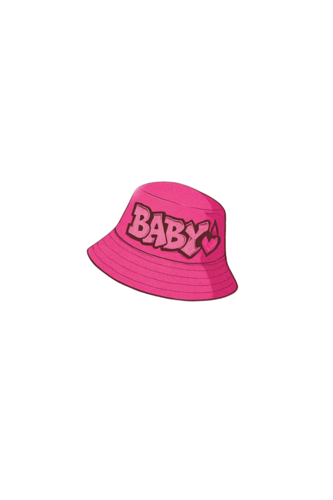
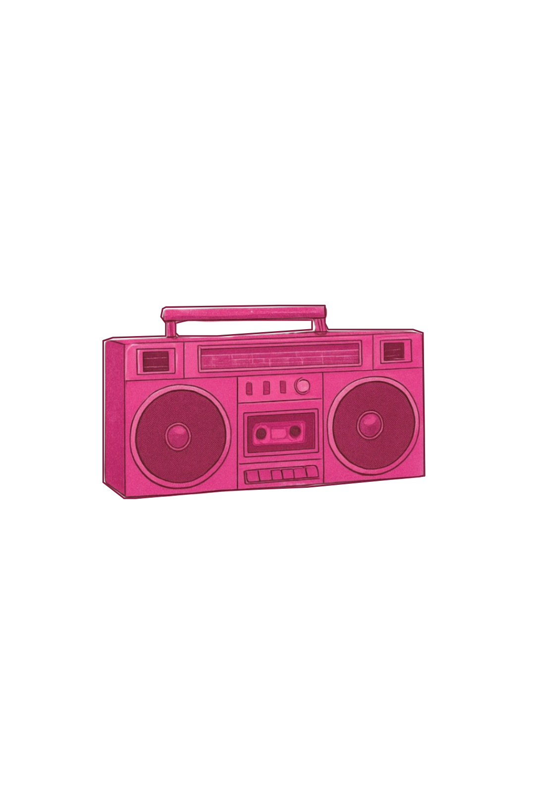
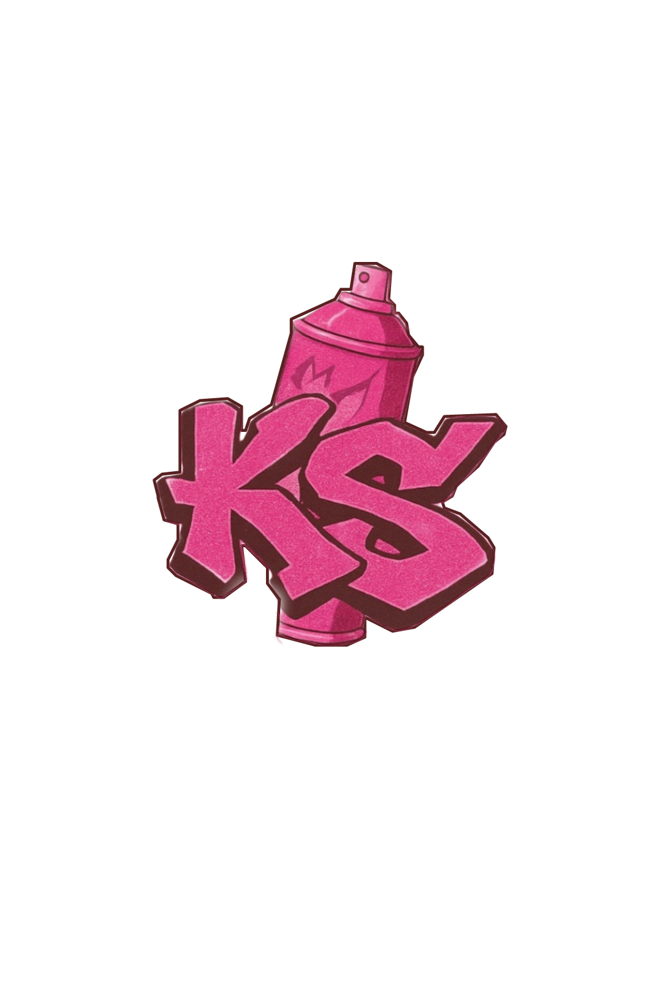
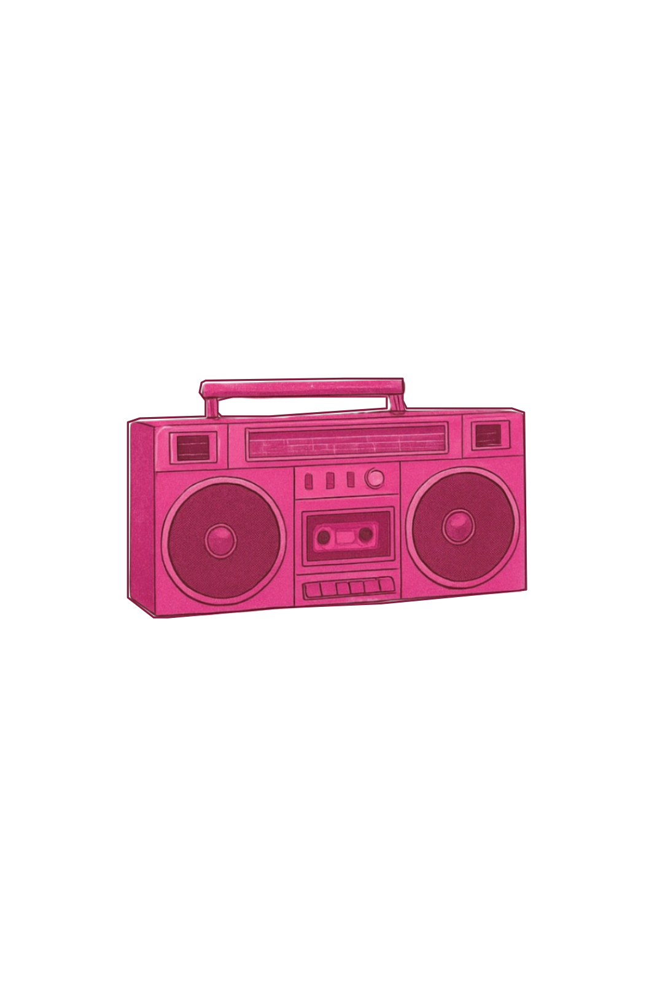
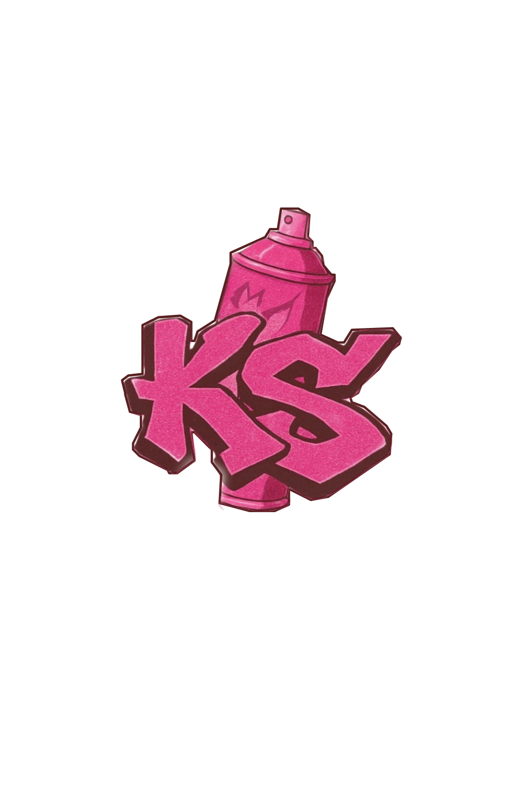
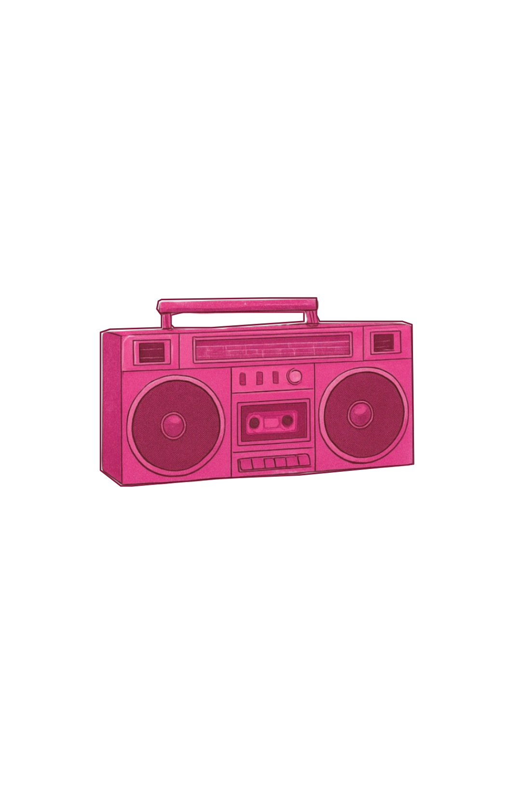
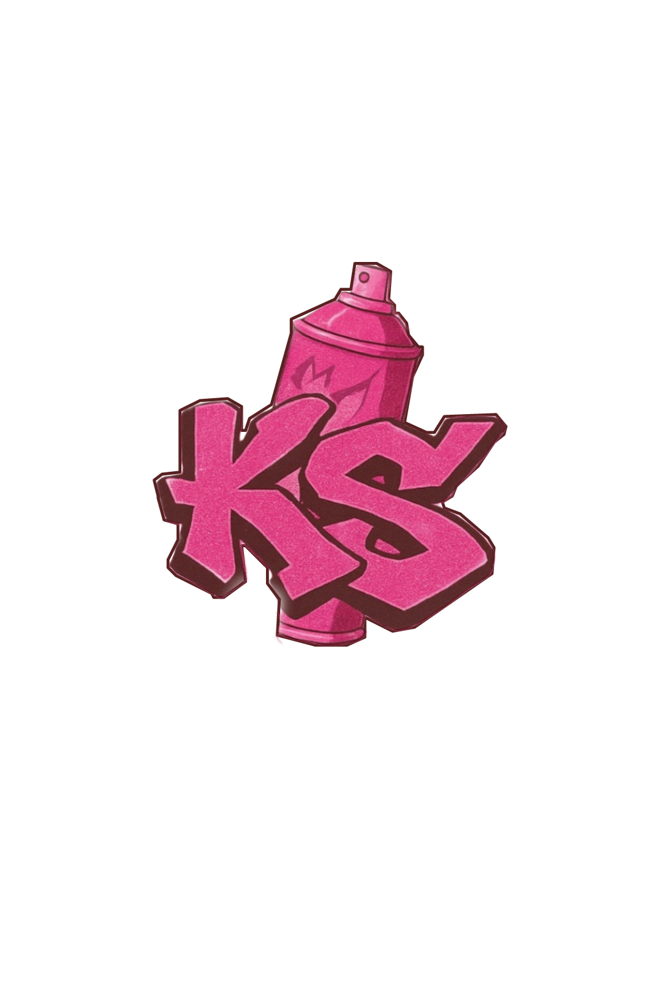

ITKS Girl
Kim KS ❤️🔥
Início
Sobre Mim
📖 Versículo do Dia
💫 Inspiração da Semana
"Estilo é quando a alma se veste de coragem e a maquiagem de luz."
📰 Últimos Artigos
Looks de rua com alma
– Como misturar peças básicas com atitude
Fé e beleza
– A maquiagem como expressão de autoconfiança
Arte nas unhas
– Estilos que falam por você

 

 


